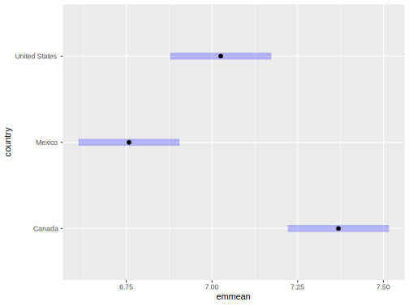
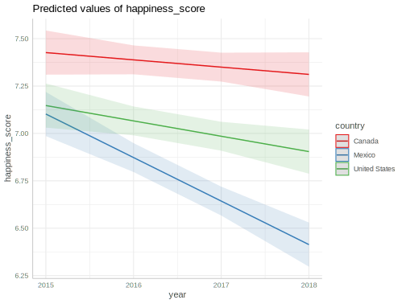

Model Exploration
The following section shows how to get started with modeling in R generally, with a focus on concepts, tools, and syntax, rather than trying to understand the specifics of a given model. We first dive into model exploration, getting a sense of the basic mechanics behind our modeling tools, and contemplating standard results. We’ll then shift our attention to understanding the strengths and limitations of our models. We’ll then change from classical methods to explore machine learning techniques. The goal of these chapters is to provide an overview of concepts and ways to think about modeling.
Model Taxonomy
We can begin with a taxonomy that broadly describes two classes of models:
- Supervised
- Unsupervised
- Some combination
For supervised settings, there is a target or set of target variables which we aim to predict with a set of predictor variables or covariates. This is far and away the most common case, and the one we will focus on here. It is very common in machine learning parlance to further distinguish regression and classification among supervised models, but what they actually mean to distinguish is numeric target variables from categorical ones (it’s all regression).
In the case of unsupervised models, the data itself is the target, and this setting includes techniques such as principal components analysis, factor analysis, cluster analytic approaches, topic modeling, and many others. A key goal for many such methods is dimension reduction, either of the columns or rows. For example, we may have many items of a survey we wish to group together into a few concepts, or cluster thousands of observations into a few simple categories.
We can also broadly describe two primary goals of modeling:
- Prediction
- Explanation
Different models will provide varying amounts of predictive and explanatory (or inferential) power. In some settings, prediction is almost entirely the goal, with little need to understand the underlying details of the relation of inputs to outputs. For example, in a model that predicts words to suggest when typing, we don’t really need to know nor much care about the details except to be able to improve those suggestions. In scientific studies however, we may be much more interested in the (potentially causal) relations among the variables under study.
While these are sometimes competing goals, it is definitely not the case that they are mutually exclusive. For example, a fully interpretable model, statistically speaking, may have no predictive capability, and so is fairly useless in practical terms. Often, very predictive models offer little understanding. But sometimes we can luck out and have both a highly predictive model as well as one that is highly interpretable.
Linear models
Most models you see in published reports are linear models of varying kinds, and form the basis on which to build more complex forms. In such models we distinguish a target variable we want to understand from the variables which we will use to understand it. Note that these come with different names depending on the goal of the study, discipline, and other factors. The following table denotes common nomenclature across many disciplines.
| Type | Names |
|---|---|
| Target | Dependent variable |
| Response | |
| Outcome | |
| Output | |
| Y | |
| Prediction | Independent variable |
| Predictor | |
| Covariate | |
| Input | |
| X |
A typical way to depict a linear regression model is as follows:
\[y = b_0 + b_1\cdot x_1 + b_2\cdot x_2 + ... + + b_p\cdot x_p + \epsilon\]
In the above, \(b_0\) is the intercept, and the other \(b_*\) are the regression coefficients that represent the relationship of the predictors \(x\) to the target variable \(y\). The \(\epsilon\) represents the error or residual. We don’t have perfect prediction, and that represents the difference between what we can guess with our predictor relationships to the target and what we actually observe with it.
In R, we specify a linear model as follows. Conveniently enough, we use a function, lm, that stands for linear model. There are various inputs, typically starting with the formula. In the formula, The target variable is first, followed by the predictor variables, separated by a tilde (~). Additional predictor variables are added with a plus sign (+). In this example, y is our target, and the predictors are x and z.
We can still use linear models to investigate nonlinear relationships. For example, in the following, we can add a quadratic term or an interaction, yet the model is still linear in the parameters. All of the following are standard linear regression models.
In the models above, x has a potentially nonlinear relationship with y, either by varying its (linear) relationship depending on values of z (the first case) or itself (the second). In general, the manner in which nonlinear relationships may be explored in linear models is quite flexible.
An example of a nonlinear model would be population growth models, like exponential or logistic growth curves. You can use functions like nls or nlme for such models, but should have a specific theoretical reason to do so, and even then, flexible models such as GAMs might be better than assuming a functional form.
Estimation
One thing to understand with predictive models of any kind is how we estimate the parameters of interest, e.g. coefficients/weights, variance, and more. To start with, we must have some sort of goal that choosing a particular set of values for the parameters achieves, and then find some way to reach that goal efficiently.
Loss
The goal of many estimation approaches is the reduction of loss, conceptually defined as the difference between the model predictions and the observed data, i.e. prediction error. In an introductory methods course, many are introduced to ordinary least squares as a means to estimate the coefficients for a linear regression model. In this scenario, we are seeking to come up with estimates of the coefficients that minimize the (squared) difference between the observed target value and the fitted value based on the parameter estimates. The loss in this case is defined as the sum of the squared errors. Formally we can state it as follows.
\[\mathcal{Loss} = \Sigma(y - \hat{y})^2\]
We can see how this works more clearly with some simple conceptual code. In what follows, we create a [function][writing-functions], allows us to move [row by row][for-loops] through the data, calculating both our prediction based on the given model parameters- \(\hat{y}\), and the difference between that and our target variable \(y\). We sum these squared differences to get a total. In practice such a function is called the loss function, cost function, or objective function.
ls_loss <- function(X, y, beta) {
# initialize the objects
loss = rep(0, nrow(X))
y_hat = rep(0, nrow(X))
# for each row, calculate y_hat and square the difference with y
for (n in 1:nrow(X)) {
y_hat[n] = sum(X[n, ] * beta)
loss[n] = (y[n] - y_hat[n]) ^ 2
}
sum(loss)
}Now we need some data. Let’s construct some data so that we know the true underlying values for the regression coefficients. Feel free to change the sample size N or the coefficient values.
set.seed(123) # for reproducibility
N = 100
X = cbind(1, rnorm(N)) # a model matrix; first column represents the intercept
y = 5 * X[, 1] + .5 * X[, 2] + rnorm(N) # a target with some noise; truth is y = 5 +.5*x
df = data.frame(y = y, x = X[, 2])Now let’s make some guesses for the coefficients, and see what the corresponding sum of the squared errors, i.e. the loss, would be.
[1] 2467.106[1] 1702.547[1] 179.2952model = lm(y ~ x, df) # fit the model and obtain parameter estimates using OLS
coef(model) # best guess given the data (Intercept) x
4.8971969 0.4475284 [1] 92.34413We see that in our third guess we reduce the loss quite a bit relative to our first guess. This makes sense because a value of 4 for the intercept and .25 for the coefficient for x are not as relatively far from the true values. However, we can also see that they are not the best we could have done. In addition, with more data, our estimated coefficients would get closer to true values.
In some relatively rare cases, a known approach is available and we do not have to search for the best estimates, but simply have to perform the correct steps that will result in them. For example, the following matrix operations will produce the best estimates for linear regression, which also happen to be the maximum likelihood estimates.
[,1]
[1,] 4.8971969
[2,] 0.4475284(Intercept) x
4.8971969 0.4475284 Most of the time we don’t have such luxury, or even if we did, the computations might be too great for the size of our data.
Many statistical modeling techniques use maximum likelihood in some form or fashion, including Bayesian approaches, so you would do well to understand the basics. In this case, instead of minimizing the loss, we use an approach to maximize the probability of the observations of the target variable given the estimates of the parameters of the model (e.g. the coefficients in a regression)18.
The following shows how this would look for estimating a single value like a mean for a set of observations from a specific distribution19. In this case, the true underlying value that maximizes the likelihood is 5, but we typically don’t know this. We see that as our guesses for the mean would get closer to 5, the likelihood of the observed values increases. Our final guess based on the observed data won’t be exactly 5, but with enough data and an appropriate model for that data, we should get close.

Again, some simple conceptual code can help us. The next bit of code follows a similar approach to what we had with least squares regression, but the goal is instead to maximize the likelihood of the observed data. In this example, I fix the estimated variance, but in practice we’d need to estimate that parameter as well. As probabilities are typically very small, we work with them on the log scale.
max_like <- function(X, y, beta, sigma = 1) {
likelihood = rep(0, nrow(X))
y_hat = rep(0, nrow(X))
for (n in 1:nrow(X)) {
y_hat[n] <- sum(X[n, ] * beta)
likelihood[n] = dnorm(y[n], mean = y_hat[n], sd = sigma, log = TRUE)
}
sum(likelihood)
}[1] -1327.593[1] -1022.18[1] -300.6741'log Lik.' -137.9115 (df=3)To better understand maximum likelihood, it might help to think of our model from a data generating perspective, rather than in terms of ‘errors’. In the standard regression setting, we think of a single observation as follows:
\[\mu = b_0 + b_1*x_1 + ... + b_p*x_p\]
Or with matrix notation (consider it shorthand if not familiar):
\[\mu = X\beta\]
Now we display how \(y\) is generated:
\[y \sim \mathcal{N}(\mathrm{mean} = \mu, \mathrm{sd} = \sigma)\]
In words, this means that our target observation \(y\) is assumed to be normally distributed with some mean and some standard deviation/variance. The mean \(\mu\) is a function, or simply weighted sum, of our covariates \(X\). The unknown parameters we have to estimate are the \(\beta\), i.e. weights, and standard deviation \(\sigma\) (or variance \(\sigma^2\)).
One more note regarding estimation, it is good to distinguish models from estimation procedures. The following shows the more specific to the more general for both models and estimation procedures respectively.
| Label | Name |
|---|---|
| LM | Linear Model |
| GLM | Generalized Linear Model |
| GLMM | Generalized Linear Mixed Model |
| GAMM | Generalized Linear Mixed Model |
| OLS | Ordinary Least Squares |
| WLS | Weighted Least Squares |
| GLS | Generalized Least Squares |
| GEE | Generalized Estimating Equations |
| GMM | Generalized Method of Moments |
Optimization
So we know the goal, but how do we get to it? In practice, we typically use optimization methods to iteratively search for the best estimates for the parameters of a given model. The functions we explored above provide a goal- to minimize loss (however defined- least squares for continuous, classification error for binary, etc.) or maximize the likelihood (or posterior probability in the Bayesian context). Whatever the goal, an optimizing algorithm will typically be used to find the estimates that reach that goal. Some approaches are very general, some are better for certain types of modeling problems. These algorithms continue to make guesses until some criterion has been reached (convergence)20.
You generally don’t need to know the details to use these algorithms to fit models, but knowing a little bit about the optimization process and available options may prove useful to deal with more complex data scenarios, where convergence can be difficult. Some packages will even have documentation specifically dealing with convergence issues. In the more predictive models previously discussed, knowing more about the optimization algorithm may speedup the time it takes to train the model, or smooth out the variability in the process.
Blurb about MCMC
Fitting Models
With practically every modern modeling package in R, the two components required to fit a model are the model formula, and a data frame that contains the variables specified in that formula. Consider the following models. In general the syntax is the same or identical, with special considerations for the type of model. The data argument is not included.
lm(y ~ x + z) # standard linear model/OLS
glm(y ~ x + z, family = 'binomial') # logistic regression with binary response
glm(y ~ x + z + offset(log(q)), family = 'poisson') # count/rate model
pscl::hurdle(y ~ x + z, dist = "negbin") # hurdle model with negative binomial response
lme4::glmer(y ~ x + (1 | group), family = 'binomial') # generalized linear mixed model
mgcv::gam(y ~ s(x)) # generalized additive model
survival::coxph(Surv(time = t, event = q) ~ x) # Cox Proportional Hazards Regression
# Bayesian
brms::brm(
y ~ x + (1 + x | group),
family = 'zero_one_inflated_beta',
prior = priors
)For examples of many other types of models, see this document.
Let’s run an example. We’ll use the world happiness dataset21. This is country level data based on surveys taken at various years, and the scores are averages or proportions, along with other values like GDP.
library(tidyverse) # load if you haven't already
load('data/world_happiness.RData')
# glimpse(happy)| Variable | N | Mean | SD | Min | Q1 | Median | Q3 | Max | Missing |
|---|---|---|---|---|---|---|---|---|---|
| year | 1704 | 2012.33 | 3.69 | 2005.00 | 2009.00 | 2012.00 | 2015.00 | 2018.00 | 0 |
| life_ladder | 1704 | 5.44 | 1.12 | 2.66 | 4.61 | 5.34 | 6.27 | 8.02 | 0 |
| log_gdp_per_capita | 1676 | 9.22 | 1.19 | 6.46 | 8.30 | 9.41 | 10.19 | 11.77 | 28 |
| social_support | 1691 | 0.81 | 0.12 | 0.29 | 0.75 | 0.83 | 0.90 | 0.99 | 13 |
| healthy_life_expectancy_at_birth | 1676 | 63.11 | 7.58 | 32.30 | 58.30 | 65.00 | 68.30 | 76.80 | 28 |
| freedom_to_make_life_choices | 1675 | 0.73 | 0.14 | 0.26 | 0.64 | 0.75 | 0.85 | 0.99 | 29 |
| generosity | 1622 | 0.00 | 0.16 | -0.34 | -0.12 | -0.02 | 0.09 | 0.68 | 82 |
| perceptions_of_corruption | 1608 | 0.75 | 0.19 | 0.04 | 0.70 | 0.81 | 0.88 | 0.98 | 96 |
| positive_affect | 1685 | 0.71 | 0.11 | 0.36 | 0.62 | 0.72 | 0.80 | 0.94 | 19 |
| negative_affect | 1691 | 0.27 | 0.08 | 0.08 | 0.21 | 0.25 | 0.31 | 0.70 | 13 |
| confidence_in_national_government | 1530 | 0.48 | 0.19 | 0.07 | 0.33 | 0.46 | 0.61 | 0.99 | 174 |
| democratic_quality | 1558 | -0.14 | 0.88 | -2.45 | -0.79 | -0.23 | 0.65 | 1.58 | 146 |
| delivery_quality | 1559 | 0.00 | 0.98 | -2.14 | -0.71 | -0.22 | 0.70 | 2.18 | 145 |
| gini_index_world_bank_estimate | 643 | 0.37 | 0.08 | 0.24 | 0.30 | 0.35 | 0.43 | 0.63 | 1061 |
| happiness_score | 554 | 5.41 | 1.13 | 2.69 | 4.51 | 5.31 | 6.32 | 7.63 | 1150 |
| dystopia_residual | 554 | 2.06 | 0.55 | 0.29 | 1.72 | 2.06 | 2.44 | 3.84 | 1150 |
The happiness score itself ranges from 2.7 to 7.6, with a mean of 5.4 and standard deviation of 1.1.
Fitting a model with R is trivial, and at a minimum requires the two key ingredients mentioned before, the formula and data.
happy_model_base = lm(
happiness_score ~ democratic_quality + generosity + log_gdp_per_capita,
data = happy
)Using matrices
Many packages still allow for matrix input instead of specifying a model formula, or even require it (but shouldn’t). This means separating data into a model (or design) matrix, and the vector or matrix of the target variable(s). For example, if we needed a speed boost and weren’t concerned about some typical output we could use lm.fit.
First we need to create the required components.
X = model.matrix(
happiness_score ~ democratic_quality + generosity + log_gdp_per_capita,
data = happy
)
head(X) (Intercept) democratic_quality generosity log_gdp_per_capita
8 1 -1.8443636 0.08909068 7.500539
9 1 -1.8554263 0.05136492 7.497038
10 1 -1.8865659 -0.11219829 7.497755
19 1 0.2516293 -0.08441135 9.302960
20 1 0.2572919 -0.02068741 9.337532
21 1 0.2999450 -0.03264282 9.376145Note the column of ones in the model matrix X. This represents our intercept, but may not mean much to you unless you understand matrix multiplication. The other columns are just as they are in the data. Note also that the missing values have been removed.
[1] 1704[1] 411We can now fit the model as follows. The target variable must contain the same number of observations as in the model matrix.
y = happy$happiness_score[as.integer(rownames(X))]
happy_model_matrix = lm.fit(X, y)
summary(happy_model_matrix) Length Class Mode
coefficients 4 -none- numeric
residuals 411 -none- numeric
effects 411 -none- numeric
rank 1 -none- numeric
fitted.values 411 -none- numeric
assign 4 -none- numeric
qr 5 qr list
df.residual 1 -none- numeric (Intercept) democratic_quality generosity log_gdp_per_capita
-1.0104775 0.1703734 1.1608465 0.6934213 In my experience, it is generally a bad sign if a package requires that you create the model matrix rather than doing so itself. I typically find that such packages tend to skip out on many other things like using typical methods like predict, coef, etc., making them even more difficult to work with. In general, the only real time you should need to use model matrices is when you are creating your own modeling package, doing simulations, utilizing model speed-ups, or otherwise know why you need them.
Summarizing Models
Once we have a model, we’ll want to summarize the results of it. Most modeling packages have a summary method we can apply, which will provide parameter estimates, some notion of model fit, inferential statistics, and other output.
Call:
lm(formula = happiness_score ~ democratic_quality + generosity +
log_gdp_per_capita, data = happy)
Residuals:
Min 1Q Median 3Q Max
-1.75376 -0.45585 -0.00307 0.46013 1.69925
Coefficients:
Estimate Std. Error t value Pr(>|t|)
(Intercept) -1.01048 0.31436 -3.214 0.001412 **
democratic_quality 0.17037 0.04588 3.714 0.000233 ***
generosity 1.16085 0.19548 5.938 6.18e-09 ***
log_gdp_per_capita 0.69342 0.03335 20.792 < 2e-16 ***
---
Signif. codes: 0 '***' 0.001 '**' 0.01 '*' 0.05 '.' 0.1 ' ' 1
Residual standard error: 0.6283 on 407 degrees of freedom
(1293 observations deleted due to missingness)
Multiple R-squared: 0.6953, Adjusted R-squared: 0.6931
F-statistic: 309.6 on 3 and 407 DF, p-value: < 2.2e-16The summary provides several pieces of information: the coefficients or weights (Estimate), the standard errors, the t-statistic (which is just the coefficient divided by the standard error), and the corresponding p-value. While we can see that all these covariates are statistically significant, which doesn’t tell us much, but serves as a starting point. The main thing to look at are the actual coefficients. For example, with regard to the effect of log GDP, moving one percentage point on GDP22 results in roughly 0.7 units of happiness. Knowing the scale of the outcome can help us understand the magnitude of the effect in a general sense. Before we showed that the standard deviation of the happiness scale was 1.1. So this would typically represent a notable effect in terms of standard deviation units- moving a percentage point on GDP would result in a 0.6 standard deviation increase in state-level happiness.
One thing we must also have in order to understand our results is to get a sense of the uncertainty in the effects. The following provides confidence intervals for each of the coefficients.
2.5 % 97.5 %
(Intercept) -1.62845472 -0.3925003
democratic_quality 0.08018814 0.2605586
generosity 0.77656244 1.5451306
log_gdp_per_capita 0.62786210 0.7589806Now we have a sense of the range of plausible values for the coefficients. The value we actually estimate is the best guess given our circumstances, but slight changes in the data, the way we collect it, the time we collect it, etc., all would result in a slightly different result. The confidence interval provides a range of what we could expect given the uncertainty.
Variable Transformations
Transforming variables can provide a few benefits, whether applied to the target, covariates, or both, and should regularly be used for most models. Some of these benefits include23:
- Interpretable intercepts
- More comparable covariate effects
- Faster estimation
- Easier convergence
- Help with heteroscedasticity
For example, merely centering predictor variables, i.e. subtracting the mean, provides a more interpretable intercept that will fall within the actual range of the target variable, telling us what the value of the target variable is when the covariates are at their means (or reference value if categorical).
Numeric variables
The following table shows the interpretation of two extremely common transformations applied to numeric variables- logging and scaling (i.e. standardizing to mean zero, standard deviation one).
| target | predictor | interpretation |
|---|---|---|
| y | x | \(\Delta y = \beta\Delta x\) |
| y | log(x) | \(\Delta y \approx (\beta/100)\%\Delta x\) |
| log(y) | x | \(\%\Delta y \approx 100\cdot \beta\%\Delta x\) |
| log(y) | log(x) | \(\%\Delta y = \beta\%\Delta x\) |
| y | scale(x) | \(\Delta y = \beta\sigma\Delta x\) |
| scale(y) | x | \(\sigma\Delta y = \beta\Delta x\) |
| scale(y) | scale(x) | \(\sigma\Delta y = \beta\sigma\Delta x\) |
For example, to start with the normal situation, a one-unit change in \(x\), i.e. \(\Delta x =1\), leads to \(\beta\) unit change in \(y\). If we log the target variable \(y\), the interpretation of the coefficient for \(x\) is that a one-unit change in \(x\) leads to an (approximately) 100\(\cdot\)\(\beta\)% change in \(y\). The 100 changes the result from a proportion to percentage change. More concretely, if \(\beta\) was .5, a unit change in \(x\) leads to (roughly) a 50% change in \(y\). If both were logged, a percentage change in \(x\) leads to a \(\beta\) percentage change in y24. These percentage change interpretations are called elasticities in econometrics and areas trained similarly.
It is very common to use standardized variables as well, also called normalizing, or simply scaling. If \(y\) and \(x\) are both standardized, a one unit (i.e. one standard deviation) change in \(x\) leads to a \(\beta\) standard deviation change in \(y\). Again, if \(\beta\) was .5, a standard deviation change in \(x\) leads to a half standard deviation change in \(y\).
Another common transformation, particularly in machine learning, is the min-max normalization, changing variables to range from some minimum to some maximum, usually zero to one.
Categorical variables
For categorical variables, we can employ what is called effects coding to test for specific types of group differences. Far and away the most common approach is called dummy coding or one-hot encoding25. For example:
library(recipes)
nafta = happy %>%
filter(country %in% c('United States', 'Canada', 'Mexico'))
dummy = nafta %>%
recipe(~ country) %>%
step_dummy(country, one_hot = TRUE) # make variables for all factor levels
prep(dummy) %>%
bake(nafta) %>%
print(n = 20)# A tibble: 39 x 3
country_Canada country_Mexico country_United.States
<dbl> <dbl> <dbl>
1 1 0 0
2 1 0 0
3 1 0 0
4 1 0 0
5 1 0 0
6 1 0 0
7 1 0 0
8 1 0 0
9 1 0 0
10 1 0 0
11 1 0 0
12 1 0 0
13 1 0 0
14 0 1 0
15 0 1 0
16 0 1 0
17 0 1 0
18 0 1 0
19 0 1 0
20 0 1 0
# … with 19 more rowsWe see that the first few observations are Canada, and the next few Mexico. This is almost never required for R modeling packages, but sometimes can be useful to do explicitly. If your modeling package cannot handle factor variables, and thus requires explicit coding, you’ll know very quickly.
Let’s run a regression as follows:
Call:
lm(formula = happiness_score ~ country, data = nafta)
Residuals:
Min 1Q Median 3Q Max
-0.26960 -0.07453 -0.00615 0.06322 0.42920
Coefficients:
Estimate Std. Error t value Pr(>|t|)
(Intercept) 7.36887 0.09633 76.493 5.64e-14 ***
countryMexico -0.61107 0.13624 -4.485 0.00152 **
countryUnited States -0.34337 0.13624 -2.520 0.03275 *
---
Signif. codes: 0 '***' 0.001 '**' 0.01 '*' 0.05 '.' 0.1 ' ' 1
Residual standard error: 0.1927 on 9 degrees of freedom
(27 observations deleted due to missingness)
Multiple R-squared: 0.692, Adjusted R-squared: 0.6236
F-statistic: 10.11 on 2 and 9 DF, p-value: 0.004994In this case, the coefficient represents the difference in means on the target variable between the reference group and the group in question. In this case, the U.S. is -0.34 less on the happy score than the reference country (Canada).
Other codings are possible, and these would allow for specific group comparisons or types of comparisons. This is sometimes called contrast coding. For example, we could compare Canada vs. both the U.S. and Mexico. By giving Canada twice the weight of the other two we can get this result. I also add a coding that will just compare Mexico vs. the U.S. The actual weights used are aribtrary but in this case should sum to zero.
| group | canada_vs_other | mexico_vs_us |
|---|---|---|
| Canada | -0.667 | 0.0 |
| Mexico | 0.333 | -0.5 |
| United States | 0.333 | 0.5 |
| weights sum to zero, but are arbitrary |
Adding such coding to a factor variable allows the corresonding models to use it in constructing the model matrix, rather than dummy coding. See the group means and calculate the results by hand for yourself.
nafta = nafta %>%
mutate(country_fac = factor(country))
contrasts(nafta$country_fac) = matrix(c(-2/3,1/3,1/3, c(0,-.5,.5)), ncol = 2)
summary(lm(happiness_score ~ country_fac, data = nafta))
Call:
lm(formula = happiness_score ~ country_fac, data = nafta)
Residuals:
Min 1Q Median 3Q Max
-0.26960 -0.07453 -0.00615 0.06322 0.42920
Coefficients:
Estimate Std. Error t value Pr(>|t|)
(Intercept) 7.05072 0.05562 126.769 6.01e-16 ***
country_fac1 -0.47722 0.11799 -4.045 0.00291 **
country_fac2 0.26770 0.13624 1.965 0.08100 .
---
Signif. codes: 0 '***' 0.001 '**' 0.01 '*' 0.05 '.' 0.1 ' ' 1
Residual standard error: 0.1927 on 9 degrees of freedom
(27 observations deleted due to missingness)
Multiple R-squared: 0.692, Adjusted R-squared: 0.6236
F-statistic: 10.11 on 2 and 9 DF, p-value: 0.004994# A tibble: 3 x 2
country happy
<chr> <dbl>
1 Canada 7.37
2 Mexico 6.76
3 United States 7.03For example, we can see that for this balanced data set, the corresponding coefficient is the halfway point, i.e. average, of the U.S. and Mexico coefficients from dummy coding: -0.611 + -0.343 / 2 = -0.477.
In other circumstances, we can use categorical embeddings to reduce a very large number of categorical levels to a smaller number of numeric variables. This is very commonly employed in deep learning.
Scales, indices, and dimension reduction
It is often the case that we have several correlated variables/items which do not all need to go into the model. For example, instead of using all items in a psychological scale, we can use the scale score, however defined, which is often just a sum score of the underlying items. Often people will create an index by using a principal components analysis, which can be thought of as a means to create a weighted sum score, or set of scores. Some (especially binary) items may tend toward the creation of a single variable that simply notes whether any of those collection of variables was present or not.
Two-step approaches
Some might do a preliminary analysis, such as a cluster analysis or factor analysis, to create new target or predictor variables. In the former we reduce several variables to a single categorical label. Factor analysis does the same but results in a more expressive continuous metric. While fine to use, the corresponding results are measured with error, so treating the categories or factor scores as you would observed variables will typically result in optimistic results when you later include them in a subsequent analysis like a linear regression. Though this difference is probably slight in most applications, keen reviewers would probably point out the model shortcoming.
Don’t discretize
Little pains advanced modelers more than seeing results where a nice expressive continuous metric butchered into two categories. There is almost never a reason to do this. There are reasons to collapse rare labels of a categorical variable, so that the new variable has fewer but more frequent categories, but even that can cause problems, and doesn’t really overcome the fact that you simply didn’t have enough data to begin with.
Variable Importance
In many circumstances, one of the modeling goals is to determine which predictor variable is most important out of the collection used in the model. However, determining relative variable importance is at best an approximation with some methods, and a fairly hopeless endeavor with others. For just basic linear regression there are many methods that would not necessarily come to the same conclusions. Some believe that standardizing variables, i.e. putting them on the same scale (e.g. mean 0 sd 1), is enough, but it is not, and doesn’t help with comparison to categorical inputs. If you’re model is not strong, it doesn’t make much sense to even worry about which is the best of a bad lot.
Another reason that ‘importance’ is a problematic endeavor is that a statistical result doesn’t speak to practical action, nor does it speak to the fact that small effects may be very important. Sex may be an important driver in social science model, but we cannot do anything about a person’s sex for many outcomes that may be of interest. With health outcomes, any effects might be worthy of attention, however small, if they could practically increase the likelihood of survival.
Even if you can come up with a metric you like, you would still need some measure of uncertainty around that to make a claim that one predictor is statistically better than another, and the only real approach to do that is some computationally expensive procedure that you will likely have to put together by hand.
As an example, for standard linear regression there are many methods that decompose \(R^2\) into relative contributions by the covariates. The tools to do so have to re-run the model in many ways to produce these estimates (see the relaimpo package for example) but you would have to use bootstrapping or similar to get interval estimates for those measures of importance. Certain techniques like random forests have a natural way to provide variable importance metrics, but providing inference on them would similarly be very computationally expensive.
In the end though, I think it is probably best to assume that any effect that seems statistically distinct from zero might be worthy of attention, and can be regarded for its own sake. You can reduce
Extracting Output
The better you get at modeling, the more often you are going to need to get at certain parts of the model output easily. For example, we can extract t
Why would you want to do this? A simple example would be to compare effects across different settings. We can collect the values, put them in a data frame, and then to a table or visualization.
Typical modeling methods you might want to use:
- summary: print results in a legible way
- plot: plot something about the model (e.g. diagnostic plots)
- predict: make predictions, possibly on new data
- confint: get confidence intervals for parameters
- coef: extract coefficients
- fitted: extract fitted values
- residuals: extract residuals
- AIC: extract AIC
Here is an example of using the predict and coef methods.
1 2 3 4 5
3.838179 3.959046 3.928180 4.004129 4.171624 (Intercept) democratic_quality generosity log_gdp_per_capita
-1.0104775 0.1703734 1.1608465 0.6934213 Also, it’s useful to assign the summary results to an object, so that you can extract things that are also useful but would not be in the model object. We did this before, so now let’s take a look.
List of 12
$ call : language lm(formula = happiness_score ~ democratic_quality + generosity + log_gdp_per_capita, data = happy)
$ terms :Classes 'terms', 'formula' language happiness_score ~ democratic_quality + generosity + log_gdp_per_capita
.. ..- attr(*, "variables")= language list(happiness_score, democratic_quality, generosity, log_gdp_per_capita)
.. ..- attr(*, "factors")= int [1:4, 1:3] 0 1 0 0 0 0 1 0 0 0 ...
.. .. ..- attr(*, "dimnames")=List of 2
.. ..- attr(*, "term.labels")= chr [1:3] "democratic_quality" "generosity" "log_gdp_per_capita"
.. ..- attr(*, "order")= int [1:3] 1 1 1
.. ..- attr(*, "intercept")= int 1
.. ..- attr(*, "response")= int 1
.. ..- attr(*, ".Environment")=<environment: R_GlobalEnv>
.. ..- attr(*, "predvars")= language list(happiness_score, democratic_quality, generosity, log_gdp_per_capita)
.. ..- attr(*, "dataClasses")= Named chr [1:4] "numeric" "numeric" "numeric" "numeric"
.. .. ..- attr(*, "names")= chr [1:4] "happiness_score" "democratic_quality" "generosity" "log_gdp_per_capita"
$ residuals : Named num [1:411] -0.405 -0.572 0.057 -0.426 -0.829 ...
..- attr(*, "names")= chr [1:411] "8" "9" "10" "19" ...
$ coefficients : num [1:4, 1:4] -1.01 0.17 1.161 0.693 0.314 ...
..- attr(*, "dimnames")=List of 2
$ aliased : Named logi [1:4] FALSE FALSE FALSE FALSE
..- attr(*, "names")= chr [1:4] "(Intercept)" "democratic_quality" "generosity" "log_gdp_per_capita"
$ sigma : num 0.628
$ df : int [1:3] 4 407 4
$ r.squared : num 0.695
$ adj.r.squared: num 0.693
$ fstatistic : Named num [1:3] 310 3 407
..- attr(*, "names")= chr [1:3] "value" "numdf" "dendf"
$ cov.unscaled : num [1:4, 1:4] 0.2504 0.0229 -0.0139 -0.0264 0.0229 ...
..- attr(*, "dimnames")=List of 2
$ na.action : 'omit' Named int [1:1293] 1 2 3 4 5 6 7 11 12 13 ...
..- attr(*, "names")= chr [1:1293] "1" "2" "3" "4" ...
- attr(*, "class")= chr "summary.lm"If we want the adjusted \(R^2\) or root mean squared error (RMSE, i.e. average error26), they aren’t readily available in the model object, but in the summary object, we can pluck them as we would any other list object.
[1] 0.6930647[1] 0.6282718Package support
There are many packages available to get at model results. One of the most widely used is broom, which has tidy and other functions that can apply in different ways to different models.
# A tibble: 4 x 5
term estimate std.error statistic p.value
<chr> <dbl> <dbl> <dbl> <dbl>
1 (Intercept) -1.01 0.314 -3.21 1.41e- 3
2 democratic_quality 0.170 0.0459 3.71 2.33e- 4
3 generosity 1.16 0.195 5.94 6.18e- 9
4 log_gdp_per_capita 0.693 0.0333 20.8 5.93e-66Some packages will produce tables for a model object that are more or less ready for publication. However, unless you know it’s in the exact style you need, you’re probably better off dealing with it yourself. For example, you can use tidy and do minor cleanup to get the table ready for publication.
Visualization
Models require visualization to be understood.
If you aren’t using visualization as a fundamental part of your model exploration, you’re likely leaving a lot of that exploration behind, and not communicating the results as well as you could to the broadest audience possible. When adding nonlinear effects, interactions, and more, visualization is a must. Thankfully there are many packages to help you get data you need to visualize effects.
We start with the emmeans package. In the following example we have a country effect and which to get the mean happiness scores per country. We then visualize the results. Here we can see that Mexico is lowest on average.
happy_model_nafta = lm(happiness_score ~ country + year, data = nafta)
library(emmeans)
country_means = emmeans(happy_model_nafta, ~ country)
country_means country emmean SE df lower.CL upper.CL
Canada 7.37 0.064 8 7.22 7.52
Mexico 6.76 0.064 8 6.61 6.91
United States 7.03 0.064 8 6.88 7.17
Confidence level used: 0.95 
We can also test for pairwise differences between the countries, and there’s no reason not to visualize that also. In the following, after adjustment Mexico and U.S. might not differ on mean happiness, but the other comparisons are statistically notable.
contrast estimate SE df t.ratio p.value
Canada - Mexico 0.611 0.0905 8 6.751 0.0004
Canada - United States 0.343 0.0905 8 3.793 0.0159
Mexico - United States -0.268 0.0905 8 -2.957 0.0547
P value adjustment: bonferroni method for 3 tests 
The following example uses ggeffects. First, we run a model with an interaction of country and year (we’ll talk more about interactions later). Then we get predictions for the year by country, and subsequently visualize. We can see that the trend, while negative for all countries, is more pronounced as we move south.
happy_model_nafta = lm(happiness_score ~ country*year, data = nafta)
library(ggeffects)
preds = ggpredict(happy_model_nafta, terms = c('year', 'country'))
plot(preds)
Whenever you move to generalized linear models or other more complicated settings, visualization is even more required, so it’s best to have some tools at your disposal.
Extensions to the Standard Linear Model
Different types of targets
In many data situations, we do not have a continuous target variable, or may want to use a different distribution to get a better fit, or adhere to some theoretical perspective. For example, count data is not continuous and often notably skewed, so assuming a normal symmetric distribution may not work as well. From a data generating perspective we can use the Poisson distribution27 for the target variable instead.
\[\ln{\mu} = X\beta\] \[\mu = e^{X\beta}\] \[y \sim \mathcal{Pois}(\mu)\] Conceptually nothing has really changed from what we were doing with the standard linear model, except for the distribution. We still have a mean function determined by our predictors, and this is what we’re typically mainly interested in from a theoretical perspective. We do have an added step, a transformation of the mean (now usually called the linear predictor). Poisson naturally works with the log of the target, but rather than do that explicitly, we instead exponentiate the linear predictor. The link function28, which links is the natural log, with the inverse link/mean function exponentiation.
In code we can demonstrate this as follows.
set.seed(123)
N = 1000
beta = c(2, 1)
x = rnorm(N)
mu = exp(beta[1] + beta[2]*x)
y = rpois(N, mu)
glm(y ~ x, family = poisson)
Call: glm(formula = y ~ x, family = poisson)
Coefficients:
(Intercept) x
2.009 0.994
Degrees of Freedom: 999 Total (i.e. Null); 998 Residual
Null Deviance: 13240
Residual Deviance: 1056 AIC: 4831\[\ln{\frac{\mu}{1-\mu}} = X\beta\] \[\mu = \frac{1}{1+e^{-X\beta}}\] \[y \sim \mathcal{Binom}(\mathrm{prob}=\mu, \mathrm{size} = 1)\] Here our link function is called the logit, and it’s inverse takes our linear predictor and puts it on the probability scale.
Again, some code can help drive this home.
Call: glm(formula = y ~ x, family = binomial)
Coefficients:
(Intercept) x
2.141 1.227
Degrees of Freedom: 999 Total (i.e. Null); 998 Residual
Null Deviance: 852.3
Residual Deviance: 708.8 AIC: 712.8# extension to count/proportional model
# mu = plogis(beta[1] + beta[2]*x)
# total = rpois(N, lambda = 5)
# events = rbinom(N, size = total, mu)
# nonevents = total - events
#
# glm(cbind(events, nonevents) ~ x, family = binomial)You’ll have noticed that when we fit these models we used glm instead of lm. The normal linear model is a special case of generalized linear models, which includes a specific class of distributions- normal, poisson, binomial, gamma, beta and more- collectively referred to as the exponential family. While this family can cover a lot of ground, you do not have to restrict yourself to it, and many R modeling packages will provide easy access to more. The main point is that you have tools to deal with continuous, binary, count, ordinal, and other types of data.
Other extensions
There are many types of models that will take one well beyond the standard linear model. In some cases, the focus is multivariate, trying to model many targets at once. Other models will even be domain-specific, tailored to a very narrow type of problem. Whatever the scenario, having a good understanding of the models we’ve been discussing will likely help you navigate these new waters much more easily.
Model Exploration Summary
At this point you should have a good idea of how to get started exploring models with R. Generally what you will explore will be based on theory, or merely curiosity. Specific packages while make certain types of models easy to pull off, without much change to the syntax. Almost invariably, you will need to process the data to make it more amenable to analysis and/or more interpretable. After model fitting, summaries and visualizations go a long way toward understanding the part of the world you are exploring.
Exercises
To be consistent with the many tools that minimize different types of losses, we usually minimize the negative log likelihood, rather than maximize the raw likelihood.↩︎
In this case, a Poisson distribution.↩︎
For example, if the next best guess for a regression coefficient results in only a difference to many decimal places from the previous one, you probably don’t care and can stop your search. Reaching your desired stopping point is known as convergence. In other cases, you may simply set a maximum number of iterations.↩︎
The World Happiness Report is a survey of the state of global happiness that ranks countries by how happy their citizens perceive themselves to be. Almost all the information here is gleaned from the report and appendices. This regards the report data from 2008-2018 included in the 2019 report.↩︎
In econometrics, if both target and predictor variable are logged, the coefficient is referred to as an elasticity.↩︎
Note that none of the benefits regard normality. Transforming variables is not done to meet the normality assumption regarding residuals, and would rarely help in that regard.↩︎
The log transformations in the table are approximations that allow an eyeballable interpretation. Typically we use exponentiated coefficients for a more exact interpretation. For example, if y is logged, a one-unit change in x leads to a \(100*(e^B-1)\)% change in y. See this link for more on interpreting logged variables.↩︎
Some distinguish one-hot from dummy coding in that the former creates a binary variable for all \(C\) categorical levels while dummy coding only creates \(C-1\) variables, leaving the reference group out. However, the reference group is only left out at model fitting, there’s no reason not to create all C variables, as it requires no additional effort and you might want to change the reference group.↩︎
For standard regression models, the divisor for calculating the RMSE is the residual degrees of freedom, but more generally it is just N, the sample size, as many modern models may have more parameters than observations.↩︎
For historical reasons, Poisson is usually denoted with mean \(\lambda\), and with the binomial the probability is often denoted with \(\pi\), but consistency is desired here.↩︎
Before we distinguished models from estimation procedures, and it’s also important to distinguish models from link functions. In some disciplines (mostly one and those trained in its methods), you’ll see some refer to a ‘logit model’, for example. However that wouldn’t tell you if the model regards a target that is binary, categorical, ordered categorical, count or has values between zero and one, which cover several types of possible distributions.↩︎